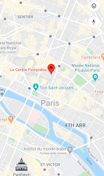

“On the Piazza side, and outside the usable volume, all public movement facilities have been centrifuged. On the opposite side, all the technical equipment and pipelines have been centrifuged. Each floor is thus completely free and it can be used for all forms of cultural activities- both known and yet to be discovered.”
Renzo Piano, architect of the Centre Pompidou
The Centre Pompidou is a complex building in the Beaubourg area of the 4th arrondissement of Paris, near Les Halles, rue Montorgueil, and the Marais.
It houses the Bibliothèque publique d'information (Public Information Library), a vast public library; the Musée National d'Art Moderne, which is the largest museum for modern art in Europe; and IRCAM, a centre for music and acoustic research. It is named after Georges Pompidou, the President of France from 1969 to 1974 who commissioned the building, and was officially opened on 31 January 1977 by President Valéry Giscard d'Estaing.
You can find more information on this website.